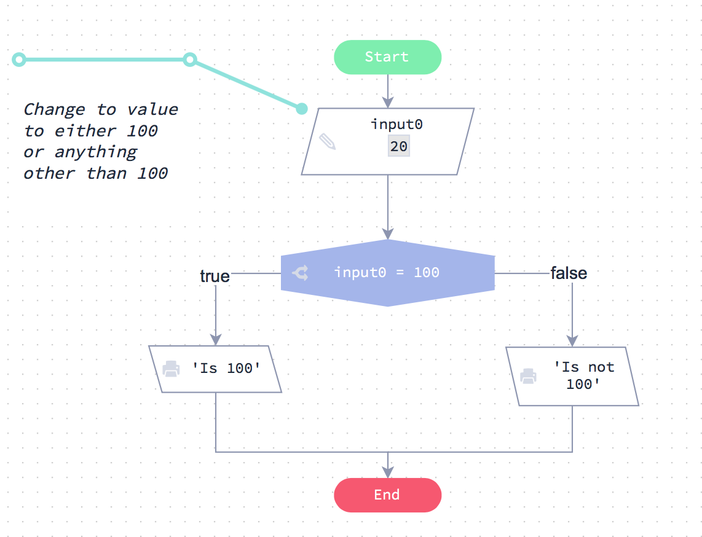
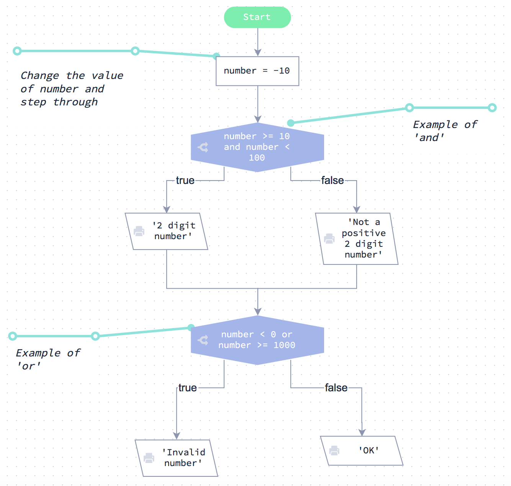
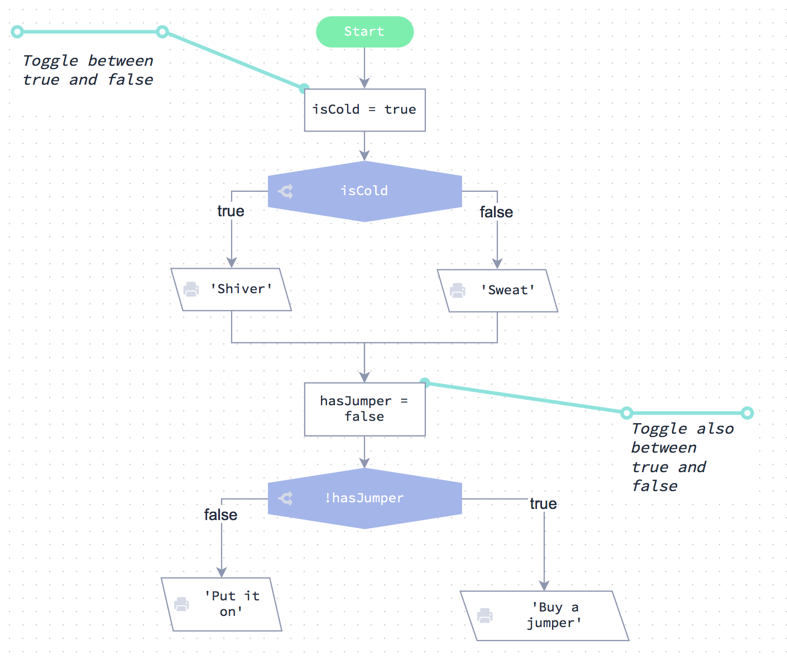

<link rel="import" href="bower_components/polymer/polymer.html">
<link rel="import" href="style/shared-style.html">
<link rel="stylesheet" href="//cdnjs.cloudflare.com/ajax/libs/highlight.js/9.12.0/styles/default.min.css">

<dom-module id="unit-2">
<script src="//cdnjs.cloudflare.com/ajax/libs/highlight.js/9.12.0/highlight.min.js"></script>
    <template strip-whitespace="">
    
    
    <style include="shared-style">        
    /*! normalize.css v3.0.3 | MIT License | github.com/necolas/normalize.css */html{font-family:sans-serif;-webkit-text-size-adjust:100%;-ms-text-size-adjust:100%;text-size-adjust:100%}body{margin:0}article,aside,details,figcaption,figure,footer,header,hgroup,main,menu,nav,section,summary{display:block}audio,canvas,progress,video{display:inline-block;vertical-align:baseline}audio:not([controls]){display:none;height:0}[hidden],template{display:none}a{background-color:transparent}a:active,a:hover{outline:0}abbr[title]{border-bottom:1px dotted}b,strong{font-weight:bold}dfn{font-style:italic}h1{font-size:2em;margin:0.67em 0}mark{background:#ff0;color:#000}small{font-size:80%}sub,sup{font-size:75%;line-height:0;position:relative;vertical-align:baseline}sup{top:-0.5em}sub{bottom:-0.25em}img{border:0}svg:not(:root){overflow:hidden}figure{margin:1em 40px}hr{box-sizing:content-box;height:0}pre{overflow:auto}code,kbd,pre,samp{font-family:monospace, monospace;font-size:1em}button,input,optgroup,select,textarea{color:inherit;font:inherit;margin:0}button{overflow:visible}button,select{text-transform:none}button,html input[type="button"],input[type="reset"],input[type="submit"]{-webkit-appearance:button;cursor:pointer}button[disabled],html input[disabled]{cursor:default}button::-moz-focus-inner,input::-moz-focus-inner{border:0;padding:0}input{line-height:normal}input[type="checkbox"],input[type="radio"]{box-sizing:border-box;padding:0}input[type="number"]::-webkit-inner-spin-button,input[type="number"]::-webkit-outer-spin-button{height:auto}input[type="search"]{-webkit-appearance:textfield;box-sizing:content-box}input[type="search"]::-webkit-search-cancel-button,input[type="search"]::-webkit-search-decoration{-webkit-appearance:none}fieldset{border:1px solid #c0c0c0;margin:0 2px;padding:0.35em 0.625em 0.75em}legend{border:0;padding:0}textarea{overflow:auto}optgroup{font-weight:bold}table{border-collapse:collapse;border-spacing:0}td,th{padding:0}*{box-sizing:border-box}input,select,textarea,button{font:13px/1.4 Helvetica,arial,nimbussansl,liberationsans,freesans,clean,sans-serif,"Segoe UI Emoji","Segoe UI Symbol"}body{font:13px/1.4 Helvetica, arial, nimbussansl, liberationsans, freesans, clean, sans-serif, "Segoe UI Emoji", "Segoe UI Symbol";color:#333;background-color:#fff}a{color:#4078c0;text-decoration:none}a:hover,a:active{text-decoration:underline}hr,.rule{height:0;margin:15px 0;overflow:hidden;background:transparent;border:0;border-bottom:1px solid #ddd}hr:before,.rule:before{display:table;content:""}hr:after,.rule:after{display:table;clear:both;content:""}h1,h2,h3,h4,h5,h6{margin-top:15px;margin-bottom:15px;line-height:1.1}h1{font-size:30px}h2{font-size:21px}h3{font-size:16px}h4{font-size:14px}h5{font-size:12px}h6{font-size:11px}small{font-size:90%}blockquote{margin:0}ul,ol{padding:0;margin-top:0;margin-bottom:0}ol ol,ul ol{list-style-type:lower-roman}ul ul ol,ul ol ol,ol ul ol,ol ol ol{list-style-type:lower-alpha}dd{margin-left:0}tt,code{font-family:Consolas, "Liberation Mono", Menlo, Courier, monospace;font-size:12px}pre{margin-top:0;margin-bottom:0;font:12px Consolas,"Liberation Mono",Menlo,Courier,monospace}html,body{color:black}#wrapper{-webkit-font-smoothing:antialiased;line-height:1.6;padding:3px;background:#fff;border-radius:3px;-moz-border-radius:3px;-webkit-border-radius:3px;color:#333}p{margin:1em 0}a{color:#4183c4;text-decoration:none}#wrapper{background-color:#fff;font-size:16px;line-height:1.6}#wrapper>*:first-child{margin-top:0 !important}#wrapper>*:last-child{margin-bottom:0 !important}@media screen{#wrapper{}}h1,h2,h3,h4,h5,h6{position:relative;font-weight:700;line-height:1.4;color:#333}h1{padding-bottom:.3em;font-size:2.25em;line-height:1.2;border-bottom:1px solid #eee}h2{padding-bottom:0.3em;font-size:1.75em;line-height:1.225;border-bottom:1px solid #eee}h3{font-size:1.5em;line-height:1.43}h4{font-size:1.25em}h5{font-size:1em}h6{color:#777;font-size:1em}p,blockquote,ul,ol,dl,table,pre{margin-top:0;margin-bottom:16px}hr{height:4px;padding:0;margin:16px 0;background-color:#e7e7e7;border:0 none}ul,ol{padding-left:2em}ul.no-list,ol.no-list{padding:0;list-style-type:none}ul ul,ul ol{margin-top:0;margin-bottom:0}ol ol,ol ul{margin-top:0;margin-bottom:0}li>p{margin-top:16px}dl{padding:0}dl dt{padding:0;margin-top:16px;font-size:1em;font-style:italic;font-weight:700}dl dd{padding:0 16px;margin-bottom:16px}blockquote{padding:0 15px;margin-left:0;color:#777;border-left:4px solid #ddd}blockquote>:first-child{margin-top:0}blockquote>:last-child{margin-bottom:0}table{display:block;width:100%;overflow:auto}table th{font-weight:700;padding:6px 13px;border:1px solid #ddd}table td{padding:6px 13px;border:1px solid #ddd}table tr{background-color:#fff;border-top:1px solid #ccc}table tr:nth-child(2n){background-color:#f8f8f8}img{max-width:100%;-moz-box-sizing:border-box;box-sizing:border-box}span.frame{display:block;overflow:hidden}span.frame>span{display:block;float:left;width:auto;padding:7px;margin:13px 0 0;overflow:hidden;border:1px solid #ddd}span.frame span img{display:block;float:left}span.frame span span{display:block;padding:5px 0 0;clear:both;color:#333}span.align-center{display:block;overflow:hidden;clear:both}span.align-center>span{display:block;margin:13px auto 0;overflow:hidden;text-align:center}span.align-center span img{margin:0 auto;text-align:center}span.align-right{display:block;overflow:hidden;clear:both}span.align-right>span{display:block;margin:13px 0 0;overflow:hidden;text-align:right}span.align-right span img{margin:0;text-align:right}span.float-left{display:block;float:left;margin-right:13px;overflow:hidden}span.float-left span{margin:13px 0 0}span.float-right{display:block;float:right;margin-left:13px;overflow:hidden}span.float-right>span{display:block;margin:13px auto 0;overflow:hidden;text-align:right}code,tt{padding:0;padding-top:.2em;padding-bottom:.2em;margin:0;font-size:85%;background-color:rgba(0,0,0,0.04);border-radius:3px}code:before,code:after{letter-spacing:-.2em;content:"\00a0"}tt:before,tt:after{letter-spacing:-.2em;content:"\00a0"}code br,tt br{display:none}del code{text-decoration:inherit;vertical-align:text-top}pre>code{padding:0;margin:0;font-size:100%;white-space:pre;background:transparent;border:0}.highlight{margin-bottom:16px}.highlight pre{padding:16px;margin-bottom:0;overflow:auto;font-size:85%;line-height:1.45;background-color:#f7f7f7;border-radius:3px}pre{padding:16px;margin-bottom:16px;overflow:auto;font-size:85%;line-height:1.45;background-color:#f7f7f7;border-radius:3px;word-wrap:normal}pre code,pre tt{display:inline;max-width:initial;padding:0;margin:0;overflow:initial;line-height:inherit;word-wrap:normal;background-color:transparent;border:0}pre code:before,pre code:after{content:normal}pre tt:before,pre tt:after{content:normal}.poetry pre{font-family:Georgia, Garamond, serif !important;font-style:italic;font-size:110% !important;line-height:1.6em;display:block;margin-left:1em}.poetry pre code{font-family:Georgia, Garamond, serif !important;word-break:break-all;word-break:break-word;-webkit-hyphens:auto;-moz-hyphens:auto;hyphens:auto;white-space:pre-wrap}sup,sub,a.footnote{font-size:1.4ex;height:0;line-height:1;vertical-align:super;position:relative}sub{vertical-align:sub;top:-1px}@media print{body{background:#fff}img,table,figure{page-break-inside:avoid}#wrapper{background:#fff;border:none !important;font-size:12px}pre code{overflow:visible}}@media screen{body.inverted{color:#eee !important;border-color:#555;box-shadow:none}.inverted #wrapper,.inverted hr,.inverted p,.inverted td,.inverted li,.inverted h1,.inverted h2,.inverted h3,.inverted h4,.inverted h5,.inverted h6,.inverted th,.inverted .math,.inverted caption,.inverted dd,.inverted dt,.inverted blockquote{color:#eee !important;border-color:#555;box-shadow:none}.inverted td,.inverted th{background:#333}.inverted pre,.inverted code,.inverted tt{background:#eeeeee !important;color:#111}.inverted h2{border-color:#555555}.inverted hr{border-color:#777;border-width:1px !important}::selection{background:rgba(157,193,200,0.5)}h1::selection{background-color:rgba(45,156,208,0.3)}h2::selection{background-color:rgba(90,182,224,0.3)}h3::selection,h4::selection,h5::selection,h6::selection,li::selection,ol::selection{background-color:rgba(133,201,232,0.3)}code::selection{background-color:rgba(0,0,0,0.7);color:#eeeeee}code span::selection{background-color:rgba(0,0,0,0.7) !important;color:#eeeeee !important}a::selection{background-color:rgba(255,230,102,0.2)}.inverted a::selection{background-color:rgba(255,230,102,0.6)}td::selection,th::selection,caption::selection{background-color:rgba(180,237,95,0.5)}.inverted{background:#0b2531;background:#252a2a}.inverted #wrapper{background:#252a2a}.inverted a{color:#acd1d5}}.highlight{background:#fff}.highlight .c{color:#998;font-style:italic}.highlight .err{color:#a61717;background-color:#e3d2d2}.highlight .k,.highlight .o{font-weight:700}.highlight .cm{color:#998;font-style:italic}.highlight .cp{color:#999;font-weight:700}.highlight .c1{color:#998;font-style:italic}.highlight .cs{color:#999;font-weight:700;font-style:italic}.highlight .gd{color:#000;background-color:#fdd}.highlight .gd .x{color:#000;background-color:#faa}.highlight .ge{font-style:italic}.highlight .gr{color:#a00}.highlight .gh{color:#999}.highlight .gi{color:#000;background-color:#dfd}.highlight .gi .x{color:#000;background-color:#afa}.highlight .go{color:#888}.highlight .gp{color:#555}.highlight .gs{font-weight:700}.highlight .gu{color:purple;font-weight:700}.highlight .gt{color:#a00}.highlight .kc,.highlight .kd,.highlight .kn,.highlight .kp,.highlight .kr{font-weight:700}.highlight .kt{color:#458;font-weight:700}.highlight .m{color:#099}.highlight .s{color:#d14}.highlight .n{color:#333}.highlight .na{color:teal}.highlight .nb{color:#0086b3}.highlight .nc{color:#458;font-weight:700}.highlight .no{color:teal}.highlight .ni{color:purple}.highlight .ne,.highlight .nf{color:#900;font-weight:700}.highlight .nn{color:#555}.highlight .nt{color:navy}.highlight .nv{color:teal}.highlight .ow{font-weight:700}.highlight .w{color:#bbb}.highlight .mf,.highlight .mh,.highlight .mi,.highlight .mo{color:#099}.highlight .sb,.highlight .sc,.highlight .sd,.highlight .s2,.highlight .se,.highlight .sh,.highlight .si,.highlight .sx{color:#d14}.highlight .sr{color:#009926}.highlight .s1{color:#d14}.highlight .ss{color:#990073}.highlight .bp{color:#999}.highlight .vc,.highlight .vg,.highlight .vi{color:teal}.highlight .il{color:#099}.highlight .gc{color:#999;background-color:#EAF2F5}.type-csharp .highlight .k,.type-csharp .highlight .kt{color:blue}.type-csharp .highlight .nf{color:#000;font-weight:400}.type-csharp .highlight .nc{color:#2b91af}.type-csharp .highlight .nn{color:#000}.type-csharp .highlight .s,.type-csharp .highlight .sc{color:#a31515}.type-csharp .highlight .k,.type-csharp .highlight .kt{color:#00F}.type-csharp .highlight .nf{color:#000;font-weight:normal}.type-csharp .highlight .nc{color:#2B91AF}.type-csharp .highlight .nn{color:#000}.type-csharp .highlight .s,.type-csharp .highlight .sc{color:#A31515}body.dark #wrapper{background:transparent !important;box-shadow:none !important}
    .hljs{display:block;overflow-x:auto;padding:0.5em;color:#333;background:#f8f8f8}.hljs-comment,.hljs-quote{color:#998;font-style:italic}.hljs-keyword,.hljs-selector-tag,.hljs-subst{color:#333;font-weight:bold}.hljs-number,.hljs-literal,.hljs-variable,.hljs-template-variable,.hljs-tag .hljs-attr{color:#008080}.hljs-string,.hljs-doctag{color:#d14}.hljs-title,.hljs-section,.hljs-selector-id{color:#900;font-weight:bold}.hljs-subst{font-weight:normal}.hljs-type,.hljs-class .hljs-title{color:#458;font-weight:bold}.hljs-tag,.hljs-name,.hljs-attribute{color:#000080;font-weight:normal}.hljs-regexp,.hljs-link{color:#009926}.hljs-symbol,.hljs-bullet{color:#990073}.hljs-built_in,.hljs-builtin-name{color:#0086b3}.hljs-meta{color:#999;font-weight:bold}.hljs-deletion{background:#fdd}.hljs-addition{background:#dfd}.hljs-emphasis{font-style:italic}.hljs-strong{font-weight:bold}#mkreplaced-toc{list-style-position:inside;padding:0;margin:0 0 0 1rem;list-style-type:none}#mkreplaced-toc li::before{content:''}#mkreplaced-toc li{font-size:1rem;line-height:1.25;font-weight:normal}#mkreplaced-toc li ul{font-size:1.3rem;font-weight:300;padding:.5rem 0;margin:0 0 0 1rem}#mkreplaced-toc li.missing{list-style-type:none !important}#mkreplaced-toc.max-1 ul,#mkreplaced-toc.max1 ul{display:none}#mkreplaced-toc.max-2 ul ul,#mkreplaced-toc.max2 ul ul{display:none}#mkreplaced-toc.max-3 ul ul ul,#mkreplaced-toc.max3 ul ul ul{display:none}#mkreplaced-toc.max-4 ul ul ul ul,#mkreplaced-toc.max4 ul ul ul ul{display:none}#mkreplaced-toc.max-5 ul ul ul ul ul,#mkreplaced-toc.max5 ul ul ul ul ul{display:none}.rtl{direction:rtl;text-align:right}@media print{body{background:white;line-height:1.4}html,body,#wrapper{max-width:100%;width:100%;-webkit-text-size-adjust:none;-webkit-perspective:none !important;box-sizing:border-box;width:auto;border:0;margin:0;padding:0;float:none;-moz-box-shadow:none !important;-webkit-box-shadow:none !important;box-shadow:none !important}mark{background:transparent !important}h1,h2,h3,h4,h5,h6{page-break-after:avoid}p,h2,h3{orphans:3;widows:3}section{page-break-before:avoid}pre>code{white-space:pre;word-break:break-word}#generated-toc,#firstdiff,#toc-title,#mkdocumentprogress,#mkincludechart,#mkprogressbar1,#mkprogressbar2,.mkscrollmeter,#alllinks,.popup{display:none !important}.suppressprintlinks a{color:inherit !important;text-decoration:none !important;border-bottom:none !important;cursor:default !important}.hrefafterlinktext #wrapper a:link:after,.hrefafterlinktext #wrapper a:visited:after{content:" (" attr(href) ") ";font-size:90%;opacity:0.9}.nocodebreak pre{page-break-inside:avoid}img,table,figure{page-break-inside:avoid}.breakfootnotes .footnotes{page-break-before:always}.breakfootnotes .footnotes hr{display:none}#mktoctitle{display:block}#print-title{display:block;border-bottom:solid 1px #666}#wrapper pre{white-space:pre;white-space:pre-wrap;word-wrap:break-word}#wrapper #generated-toc-clone,#wrapper #mkreplaced-toc{display:block}.task-list .task-list-item{list-style-type:none !important}.task-list .gh-complete.task-list-item .task-list-item-checkbox:before{content:'\2713';background:#838387}.task-list .task-list-item-checkbox{-webkit-appearance:none;position:relative}.task-list .task-list-item-checkbox:before{content:' ';border:solid 1px #aaa;width:1em;height:1em;display:block;border-radius:2px;left:-20px;top:-.75em;color:white;font-weight:bold;line-height:1;text-align:center;position:absolute}}
    #wrapper #generated-toc-clone,#wrapper #mkreplaced-toc,#wrapper #generated-toc-clone ul,#wrapper #mkreplaced-toc ul{list-style-position:inside}#wrapper #generated-toc-clone li.missing,#wrapper #mkreplaced-toc li.missing{list-style-type: none!important}#wrapper #generated-toc-clone,#wrapper #mkreplaced-toc{list-style-type: upper-roman}#wrapper #generated-toc-clone>li>ul,#wrapper #mkreplaced-toc>li>ul {list-style-type: decimal}#wrapper #generated-toc-clone>li>ul>li>ul,#wrapper #mkreplaced-toc>li>ul>li>ul{list-style-type: decimal-leading-zero}#wrapper #generated-toc-clone>li>ul>li>ul>li>ul,#wrapper #mkreplaced-toc>li>ul>li>ul>li>ul{list-style-type: lower-greek}#wrapper #generated-toc-clone>li>ul>li>ul>li>ul>li>ul,#wrapper #mkreplaced-toc>li>ul>li>ul>li>ul>li>ul{list-style-type: disc}#wrapper #generated-toc-clone>li>ul>li>ul>li>ul>li>ul>li>ul,#wrapper #mkreplaced-toc>li>ul>li>ul>li>ul>li>ul>li>ul{list-style-type: square}#wrapper #generated-toc-clone,#wrapper #mkreplaced-toc{list-style-position:outside!important;margin-left:2rem;}
    </style>

    <style id="mkprintstyles">@media print{#wrapper #generated-toc-clone,#generated-toc{display:none!important}
    html,body,#wrapper{font-size:10pt!important}
    }
    </style>
        
    <div id="wrapper">
        <h1>2 . Estructuras Condicionales</h1>
<p>Esta unidad trata de usar sentencias condicionales en JavaScript.</p>
<p>Aquí hay un buen ejemplo:</p>
<pre class="hljs" class="language-js"><code>var number = 123   // prompt(&quot;input: &quot;)

if (number &gt;= 10 &amp;&amp; number &lt; 100) {	// 1. si el número es de 2 dígitos
  console.log('número de 2 dígitos') 	// entonces el output está diciendo 
}
else if (number &gt;= 100) {			        // 2. De lo contrario, si hay más de 2 dígitos
  console.log ('número de dígitos múltiples') // entonces el output está diciendo 
}
else {						                    // 3. de lo contrario
  console.log ('número de 1 dígito')	// este debe ser un número de un solo dígito
}
</code></pre>
<p><strong>Si</strong> el número es mayor o igual a 10 y  el número es menor que 100, <strong>entonces</strong> mostrar ‘número de 2 dígitos’ <strong>de lo contrario si</strong> el número es mayor o igual a 100 entonces mostrar ‘número de dígitos múltiples’ <strong>de lo contrario</strong>  mostrar ‘número de 1 dígito’.</p>
<h1>1 . 1 . Experimentos</h1>
<p>Esta ventana se proporciona para que pruebe cualquier código que desarrolle. Úselo para experimentar y practicar.</p>
<p>Hay un código de inicio proporcionado para usted. Este código se explicará en las siguientes páginas.</p>
<pre class="hljs" class="language-js"><code>
// Escribe el código de experimento a continuación

console.log ('su archivo de experimento')

</code></pre>
<p><a href="">EJECUTE EL CÓDIGO</a></p>
<h1>2 . Condiciones explicadas</h1>
<p>Echa un vistazo a la diagrama de flujo; el gráfico muestra el uso de una condición.</p>
<h2>Ejemplo</h2>
<p></p>
<p>En este ejemplo, la condición es input0 &gt; 100 . Puede ver cómo esta condición puede ser verdadera o falsa. Estos son los únicos dos posibles resultados de la decisión.</p>
<h1>2 . 1 . Condiciones en el código</h1>
<p>A la izquierda está el código JavaScript equivalente al gráfico de Flode de la página anterior.</p>
<p>Si ejecuta el código verá que se ocupa de la sentencia condicional exactamente de la misma manera que hizo el gráfico de Flode.</p>
<pre class="hljs" class="language-js"><code>
// Obtener el input desde la línea de comandos
var number = +process.argv [2]

// Su código va abajo

// output del número del input del programa
console.log ('La entrada de línea de comandos es:' + number)

// Y aquí viene nuestra declaración ‘if'
if (number&gt; 100) {
  console.log ('grande')
}
else {
  console.log ('pequeño')
}

</code></pre>
<p><a href="">EJECUTE EL CÓDIGO</a></p>
<p>Echa un vistazo a cómo funciona este código:</p>
<p>En primer lugar, los datos de prueba de nuestra variable de entrada <code>number</code>, proviene de la línea de comandos.</p>
<pre class="hljs"><code>var number = process.argv [2]
</code></pre>
<p>Y aquí viene la parte importante. Se utiliza una instrucción <code>if</code> para comprobar si<code>number</code> es mayor que 100 . Si lo es, entonces emitimos la cadena ‘grande’. De lo contrario, emitiremos la cadena ‘pequeño’.</p>
<pre class="hljs" class="language-js"><code>if (number &gt; 100) {
  console.log ('grande')
}
else {
  console.log ('pequeño')
}
</code></pre>
<h1>2 . 2 . Declaraciones condicionales explicadas</h1>
<p>Ahora vamos a ver con más detalle cómo funciona la sentencia <code>if</code>. Aquí está el código completo nuevamente:</p>
<pre class="hljs" class="language-js"><code>var number = 123   // prompt(&quot;input: &quot;)
if (number &gt; 100) {
  console.log ('grande’')
}
else {
  console.log ('pequeño')
}
</code></pre>
<p>En primer lugar, eche un vistazo a la primera línea:</p>
<h2>La sentencia if</h2>
<pre class="hljs" class="language-js"><code>
 if (number &gt; 100) {

</code></pre>
<p>1. Inicie la línea con <code>if</code>.</p>
<p>2. Ahora especifique la condición dentro de los paréntesis <code>(condión)</code>.</p>
<p>3. Por último, al final de la línea se añade un <code>{</code>, conocido como una <strong>llave</strong>.</p>
<h2>Si la condición es verdadera</h2>
<p><strong>if</strong> (si) la condición es verdadera, entonces realizas todas las instrucciones que vienen después de ella, dentro del <code>{</code> <code>}</code>. En este ejemplo sólo hay una instrucción.</p>
<pre class="hljs"><code>
console.log ('grande')

</code></pre>
<p>Todo lo que está dentro de <code>{</code>  y `} se le denomina <em>bloque de código</em>.</p>
<h2>De otra manera</h2>
<p>Si la condición es <strong>falsa</strong> (not true), el bloque de código <code>else</code> se ejecuta en su lugar.</p>
<pre class="hljs"><code>
console.log ('pequeño')

</code></pre>
<h2>Bloques de código</h2>
<p>El <code>{</code> al final de la línea <code>if</code> se utiliza para iniciar un bloque de código. Una vez que se ha iniciado el bloque de código, agrega el código que desea ejecutar en las siguientes líneas. A continuación, finaliza el bloque de código con un <code>}</code>.</p>
<h1>2 . 3 . Indentación</h1>
<p>Indentación significa dejar un espacio vacío entre el margen izquierdo y el comienzo de una línea de código. En algunos lenguajes de programación como Python, la sangría es <em>requerida</em>. En estos idiomas, si no se indenta su código correctamente, no se ejecutará.</p>
<p>En JavaScript, su código funcionará bien sin sangría pero parecerá desordenado y puede ser difícil para otros leer y entender.</p>
<p>Echa un vistazo al código que está escrito sin sangría. Es difícil de leer en comparación con el código que hemos utilizado en las páginas anteriores.</p>
<pre class="hljs" class="language-js"><code>if (number &gt; 100) { 
  console.log ('grande')
  
} else {
  console.log ('pequeño')
}
</code></pre>
<h2>¿Qué código se debería identar?</h2>
<p>Se debe identar todo el código dentro de un bloque de código. Los bloques de código  comienzan con el carácter <code>{</code> y terminan con <code>}</code>.</p>
<pre class="hljs"><code>If (number &gt; 100) {
  aquí todo el código identado
}
</code></pre>
<p>Pronto verás otras sentencias que también tienen bloques de código, como son los ciclos <code>for</code> y<code>while</code>. Estos deben ser identados también.</p>
<pre class="hljs"><code>while (contador  &lt;= 9) {
  console.log (contador)
  contador = contador + 1
}
</code></pre>
<h2>¿Cómo se indenta código?</h2>
<p>Pulse la tecla de tabulación al principio de una nueva línea para identar su código. (La tecla de tabulación es la tecla con dos flechas apuntando en direcciones opuestas).</p>
<p>A veces los principiantes presionan la barra de espacio varias veces para sangrar su código. <strong>No haga esto</strong>.</p>
<p>Siempre use la tecla de tabulación en su lugar. Esto asegura que las sangrías sean consistentes.</p>
<p>En JavaScript, utilice 2 o 4 espacios para sangrar.</p>
<h1>2 . 4 . Explicación de iguales</h1>
<p>Echa un vistazo al diagrama de flujo.</p>
<p></p>
<p>A continuación se muestra el código JavaScript equivalente:</p>
<pre class="hljs" class="language-js"><code>var number = 123   // prompt(&quot;input: &quot;)
if (number == 100) {
  console.log ('es 100')
} else {
  console.log ('no es 100')
}
</code></pre>
<h2>¿Por qué usamos ==?</h2>
<p>Tenga en cuenta que necesita utilizar <code>==</code> y ** not ** =.</p>
<p>En JavaScript (y muchos otros lenguajes de programación) <code>=</code> es el operador * de asignación *, no un operador de comparación. Esto significa que usted usa <code>==</code> para comparar cosas y <code>=</code> para establecer variables.</p>
<pre class="hljs"><code>N = 100 // asigna N a 100 
N == 100 // falso a menos que N tenga el valor 100
</code></pre>
<h1>2 . 5 . Desafío ==</h1>
<p>Le proporcionaremos un número, N.</p>
<ul>
<li>Si N es igual a 100, el output ‘éxito’</li>
<li>De lo contrario, output ‘pierde’</li>
</ul>
<p>Recuerde que el string distingue entre mayúsculas y minúsculas.</p>
<pre class="hljs" class="language-js"><code>// Obtener argumentos de la línea de comandos
// Asegúrese de que N se maneje como un número
var N = +process.argv[2]

// Su código va aquí

</code></pre>
<p><a href="">¡Revisalo!</a></p>
<h1>2 . 6 . No es igual explicado</h1>
<p>Echa un vistazo a la tabla de Flode a la izquierda, que muestra una condición “no es igual”. A continuación se muestra el código JavaScript equivalente.</p>
<p>! [Screenshot 2017-07-12 20.22.50.png](resources/ 68D791572098196733D1301DBC3AD230.png)</p>
<pre class="hljs"><code>if (input0 != 100) { 
  console.log ('no es 100')} else {console.log ('es 100')
}

</code></pre>
<h2>!=</h2>
<p>Usted puede recordar de la unidad anterior que el signo <code>!</code> Significa ‘no’ por lo tanto <code>!=</code> Significa ‘no es igual’</p>
<h1>2 . 7 . No es igual a (!=)</h1>
<p>Le pasaremos un string.</p>
<ul>
<li>Si el string no es igual a ‘Bingo’ output ‘perdio’</li>
<li>De lo contrario, output ‘exito!’</li>
</ul>
<p>Utilice el <code>!=</code> en su condición.</p>
<pre class="hljs" class="language-js"><code>
// Obtener argumentos de línea de comandos
Var testString = proceso.argv [2]

// Su código va aquí

</code></pre>
<p><a href="">¡Revisalo!</a></p>
<h1>2 . 8 . Dos condiciones</h1>
<p>Ahora veamos otro ejemplo. Mira el gráfico de Flode a la izquierda. Pase a través de la tabla y verá que funciona de la siguiente manera:</p>
<blockquote></blockquote>
<p>! [ Screenshot 2017-07-12 20.25.59.png](resources/ F47FA1181121E6DF09BBA962869EA162.png)</p>
<blockquote>
<p>Si el número es menor o igual a 100, output ‘pequeño’. Si el número es mayor que 100  y también mayor que 200 el output es ‘enorme’, si no el output es ‘grande’</p>
</blockquote>
<p>Ahora haga clic en la pestaña del archivo <code>if2.js</code> en el panel izquierdo para ver cómo se escribiría el código JavaScript para hacer lo mismo.</p>
<pre class="hljs" class="language-js"><code>
var number = 211

// Como está escrito en el gráfico de Flode
if (number &lt;= 100) {
  console.log ('pequeño')
}
else if (number&gt; 200) {
  console.log ('enorme')
}
else {
  console.log ('grande')
}

</code></pre>
<h2>else if (de lo contrario si)</h2>
<p>Eche un vistazo a la segunda condición, se utiliza la siguiente instrucción:</p>
<pre class="hljs"><code>else if (input0 \&gt; 200) {
</code></pre>
<p>El uso de <code>else if</code> significa que esta línea sólo se ejecutará si la primera condición <code>if</code> fue <code>false</code>.</p>
<p>Esta es la forma general en que JavaScript evalúa las sentencias <code>if</code>.</p>
<pre class="hljs"><code>if (condicion1) {hace algo} else if (condicion2) {hace otra cosa} else if (condicion3) {hace otra cosa} si no de otra manera {hace esto}
</code></pre>
<ul>
<li>Se evalúa la primera condición <code>if</code>. Si es cierto, entonces se ejecutará el bloque de código y la ejecución saltará al final de todas las condiciones <code>if / else</code>.</li>
<li>Si es falso, entonces todas las condiciones <code>else if</code> serán evaluadas a su vez hasta que una de ellas tenga una condición    <code>true</code>.</li>
<li>Si ninguna de las condiciones <code>if</code> o <code>else if</code> se evalúan como <code>true</code>, entonces el bloque de código <code>else</code> se ejecutará automáticamente (si se utilizara).</li>
</ul>
<h1>2 . 9 . Corregir los errores</h1>
<p>Corrige el código partido a la izquierda</p>
<ul>
<li>¡Puede haber más de un error!</li>
<li>Asegúrese de que su programa funcione en ambos casos: <code>str</code> es al inicio igual a ‘there’ y luego no es igual.</li>
</ul>
<pre class="hljs" class="language-js"><code>
// Obtener argumentos de la línea de comandos
input0 = &quot;there&quot; // prompt(&quot;input: &quot;)

// Su código va aquí
if (input0 = 'there') {
  console.log (1)
}
else {
  console.log (0)

</code></pre>
<p><a href="">¡Revisalo!</a></p>
<h1>2 . 10 . Corregir más errores</h1>
<p>Corrige el código partido a la izquierda. Podría haber uno o más errores.</p>
<pre class="hljs" class="language-js"><code>
// Obtener un input desde la línea de comandos
var text = &quot;Bingo&quot; // prompt(&quot;input: &quot;)

if (texts != 'Bingo')
  console.log ('Perdió')
}
else {
  console.log ('Acertó!')

</code></pre>
<p><a href="">¡Revisalo!</a></p>
<h1>2 . 11 . 1 ó 0</h1>
<p>Se le proporciona un input  numérico que será 1 o 0.</p>
<p>Si el número es 1, el output es “prender”, si es 0 el output es&quot;apagar&quot;.</p>
<pre class="hljs" class="language-js"><code>// Obtener argumentos de la línea de comandos
// Asegúrese de que sean tratados como números
var N = &quot;prender&quot; // prompt(&quot;input: &quot;)

// Su código va aquí

</code></pre>
<p><a href="">¡Revisalo!</a></p>
<h1>2 . 12 . True o False (verdadero o falso)</h1>
<p>Este desafío está al revés.</p>
<p>Le proporcionamos un input  de string que es “true” o “false”. Debería dar de output un número 1 si es verdadero ‘true’ o 0 si es falso ‘false’.</p>
<pre class="hljs" class="language-js"><code>// Obtener argumentos de la línea de comandos
var inputText = &quot;true&quot; // prompt(&quot;input: &quot;)

// Su código va aquí

</code></pre>
<p><a href="">¡Revisalo!</a></p>
<h1>3 . Operadores lógicos</h1>
<p>Eche un vistazo a la tabla Flode a la izquierda. El gráfico contiene dos bloques condicionales donde se puede ver que se utiliza <code>and</code>(y)  y<code>or</code>(o).</p>
<p></p>
<p>A continuación se muestra el código JavaScript equivalente. Pruebe con diferentes valores para <code>number</code>.</p>
<pre class="hljs"><code>// Cambie el valor del número y pase a través del número 
var number = -10 
// un ejemplo de 'and' 
if (number &gt;= 10 &amp;&amp; number &lt;100) {
  console.log ('número de 2 dígitos')
} else {
  console .log ('número de 1 dígito')
}
// ejemplo de 'o' 
if (número &lt; 0 || número &gt;= 1000) {
  console.log ('Número inválido')} 
else {
  console.log ('OK’)
}
</code></pre>
<h2>&amp;&amp; y ||</h2>
<p>Lo único nuevo es que cuando se utilizan operadores lógicos en JavaScript, no se puede escribir “and” y “or”. Tienes que usar ‘&amp;&amp;’ y ‘||’.</p>
<p>Aparte de esto, el `if / else 'sigue exactamente los mismos principios.</p>
<h1>3 . 1 . ‘and’ y ‘or’ en el código</h1>
<p>A la izquierda está el código JavaScript. Siéntase libre de jugar con esto, experimentar y probar cosas.</p>
<pre class="hljs" class="language-js"><code>
// establece este número para probar tus valores booleanos
var number  = -10

// Primer bloque if
if (number &gt; = 10 &amp;&amp; number &lt; 100 ) {
  console.log ('número de 2 dígitos')
}
else {
  console.log ('número de 1 dígito')
}

// Otro bloque if
if (number &lt; 0 || number &gt;= 1000) {
  console.log ('Número no válido')
}
else {
  console.log ('ok')
}
</code></pre>
<p><a href="">EJECUTE SU CÓDIGO</a></p>
<h1>3 . 2 . Coches rápidos 1</h1>
<p>Se le proporcionan 2 valores de input que determinan la velocidad de 2 coches.</p>
<p>Si cualquier coche está viajando en más de 70 entonces el output es ‘carro rápido’.De lo contrario el output es ‘ok’.</p>
<pre class="hljs" class="language-js"><code>
// Obtener el input desde la línea de comandos
// Asegúrese de que sean tratados como números
var car1 = 12 // prompt(&quot;input: &quot;)
var car2 = 15 // prompt(&quot;input: &quot;)

// Su código va aquí

</code></pre>
<p><a href="">¡Revisalo!</a></p>
<h1>3 . 3 . Coches rápidos 2</h1>
<p>Se le proporcionan 2 valores de input que determinan la velocidad de 2 coches.</p>
<ul>
<li>Si ambos coches están viajando en más de 70 entonces el output es ‘2 carros rápidos’</li>
<li>Si sólo un coche  se está moviendo a más de 70, el output es  ‘1 carro rápido’</li>
<li>De lo contrario el output es ‘ningún carro rápido’</li>
</ul>
<pre class="hljs" class="language-js"><code>
// Obtener las velocidades de nuestro carro desde la línea de comandos
// Trátelos como números
var speed1 = 13 // prompt(&quot;input: &quot;)
var speed2 = 14 // prompt(&quot;input: &quot;)

// Escribe tu código abajo

</code></pre>
<p><a href="">¡Revisalo!</a></p>
<h1>3 . 4 . Categorías</h1>
<p>Se le proporciona la edad de una persona y es necesario determinar en qué nivel escolar esta la persona.</p>
<ul>
<li>Si esta de 6 a 11 el output es escuela ‘primaria’</li>
<li>Si esta de 12 a 18 el output es 'escuela ‘secundaria’</li>
<li>Si es ninguno de los dos, a continuación, el output es ‘NA’</li>
</ul>
<pre class="hljs" class="language-js"><code>
// Obtenga los argumentos en la línea de comandos
var age = 14 // prompt(&quot;input: &quot;)

// Su código va aquí

</code></pre>
<p><a href="">¡Revisalo!</a></p>
<h1>4 . Booleano</h1>
<p>Ha utilizado valores booleanos antes en Flode. Para recordarle, a la izquierda está el gráfico de Flode con el que trabajó anteriormente.</p>
<p></p>
<p>En un bloque Flode, puede utilizar cualquiera de los siguientes:</p>
<pre class="hljs"><code>esFrio = true 
esFrio = false
</code></pre>
<p>Mire el gráfico de Flode a la izquierda. Puede ver que el gráfico toma una decisión basada en la variable booleana mostrada anteriormente.</p>
<p>¿La condición de decisión es <code>esFrio</code>? También podríamos escribirlo así y se comportaría exactamente de la misma manera:</p>
<pre class="hljs"><code>esFrio = true
</code></pre>
<h2>No</h2>
<p>Ahora mire la segunda decisión. La expresión <code>!tieneJumper</code> puede leerse como '<strong>no</strong> tiene Jumper '.</p>
<p>Tenga en cuenta el carácter <code>!</code> Antes de <code>tieneJumper</code>. Esto significa ‘no’.</p>
<p>También podríamos haberlo escrito así:</p>
<pre class="hljs"><code>tieneJumper = false
</code></pre>
<p>… y el resultado sería el mismo. Sin embargo, mezclar sus comparaciones <code>true</code> y<code>false</code> puede ser confuso. Es más legible hacer todas sus comparaciones “verdaderas” si es posible.</p>
<h2>Jugar con el gráfico</h2>
<p>Pase a través de la tabla. Siéntase libre de experimentar y cambiar los valores de <code>esFrio</code> y<code>tieneJumper</code> y seguir con el flujo de ejecución para asegurarse de que se entiende.</p>
<p>En las siguientes páginas hay algunos retos para reforzar su comprensión de los conceptos booleanos.</p>
<h1>4 . 1 . Código equivalente</h1>
<pre class="hljs" class="language-js"><code>
var esFrio = false          // Cambia entre verdadero y falso

if (esFrio) {
  console.log ('tiemblo')
}
else {
  console.log ('Sudo')
}

var tieneJumper = true     // Cambia también entre true y false
if ( !tieneJumper) {
  console.log ('Comprar un Jumper')
}
else {
  console.log ('Ponermelo')
}
</code></pre>
<h1>4 . 2 . Retornar un booleano simple</h1>
<p>Le proporcionamos un número, N.</p>
<p>Si N es mayor o igual a 100, genera un booleano verdadero, de lo contrario falso.</p>
<pre class="hljs" class="language-js"><code>
// Obtener argumentos de la línea de comandos
// Asegúrese de que sean tratados como números
var N = 19 // prompt(&quot;input: &quot;)

// Su código va aquí

</code></pre>
<p><a href="">¡Revisalo!</a></p>
<h1>4 . 3 . Inputs (entradas) booleanas</h1>
<p>Pasamos en 2 entradas booleanas, Frío y Lluvioso.</p>
<p>Debería generar una sola cadena:<br />
<code>('Frío' o 'caliente') 'y' ('lluvioso' o 'seco')</code><br />
Basado en estos inputs.</p>
<p><code>('Frío' o 'caliente')</code> significa que debe usar una de las dos palabras, dependiendo del valor booleano de entrada (input).</p>
<p>Por ejemplo, falso, verdadero = ‘cálido y lluvioso’</p>
<pre class="hljs" class="language-js"><code>
// Obtener entrada desde la línea de comandos
Var isCold =true // prompt(&quot;input: &quot;)
Var isRainy = false // prompt(&quot;input: &quot;)

// Su código va aquí


</code></pre>
<p><a href="">¡Revisalo!</a></p>

    </div>

  </template>
    <script>
        Polymer({
            is: "unit-2",
            ready: function () {
                hljs.initHighlightingOnLoad();
            }
        });
    </script>
</dom-module>